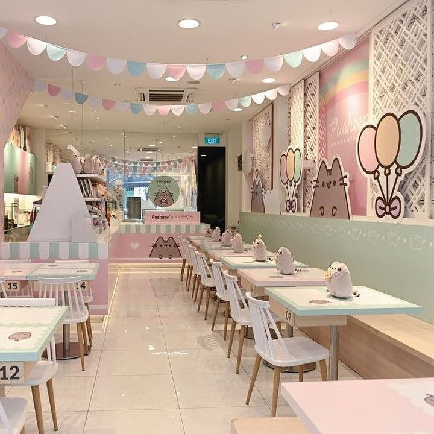
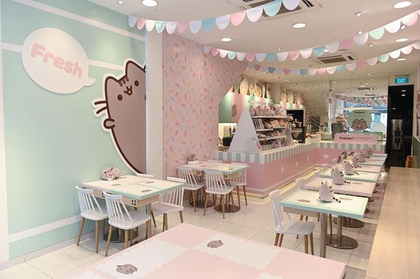
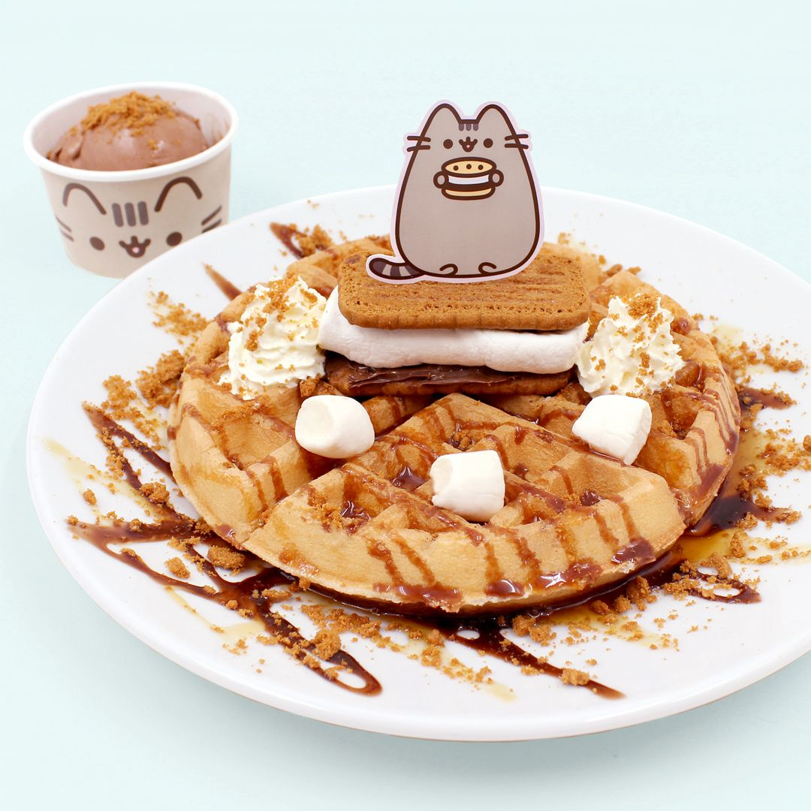
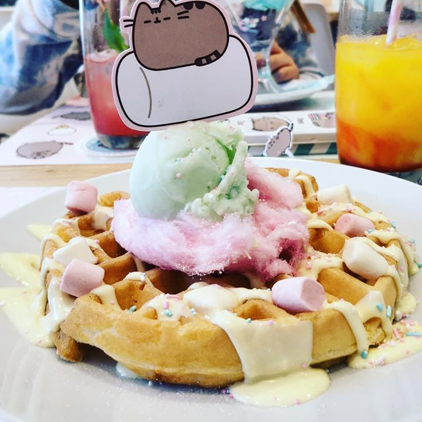

CONOCENOS UN POCO MÁS!
Bienvenidos a Kitty Coffee ☕
Todo comenzó con una idea sencilla: crear un rincón donde las personas pudieran detenerse un momento, sonreír y compartir una taza de café rodeados de pequeños ronroneos y dulzura.
Inspirados por la calma de los gatitos y el aroma de los postres recién horneados, abrimos Kitty Coffee, un lugar donde cada detalle fue pensado para que te sientas como en casa.
Aquí, los gatos no solo decoran nuestras paredes, también inspiran cada sonrisa y cada sorbo.
Nuestro pequeño refugio



Delicias para corazones curiosos



¡Visita nuestro menú y descubre muchas más delicias!